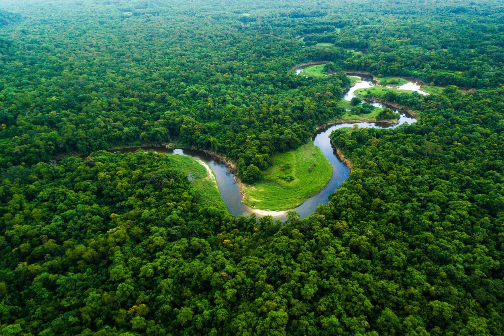

ESG é a sigla para Environmental, Social and Governance — em português, Ambiental, Social e Governança. É um conjunto de práticas e critérios usados para avaliar como uma empresa atua em relação à sustentabilidade, responsabilidade social e ética na gestão.
A preservação ambiental não é mais um custo, e sim um investimento estratégico. Empresas que cuidam do meio ambiente se tornam mais competitivas, sustentáveis e respeitadas.
Os animais da Amazônia desempenham papéis fundamentais no equilíbrio dos ecossistemas, como dispersão de
sementes, polinização e controle de pragas.
Sem essas espécies, muitas plantas deixariam de se reproduzir, afetando toda a cadeia alimentar